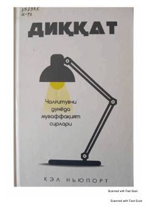

DCChalg'ituvchi dunyoda diqqatni jamlash va yuqori natijalarga erishish sirlari.
Ushbu kitobda chalg'ituvchi omillar va ijtimoiy tarmoqlar ko'paygan davrda diqqatni jamlash hamda ish unumdorligini oshirish sirlari ochib beriladi. Muallif o'z tajribalari va ilmiy kuzatuvlariga asoslanib, chuqur diqqatni boshqarish va muvaffaqiyatga erishish yo'llarini tushuntiradi. Kitob zamonaviy insonlarga xotirjamlik va samaradorlikni birdek saqlab qolishga yordam beradi.